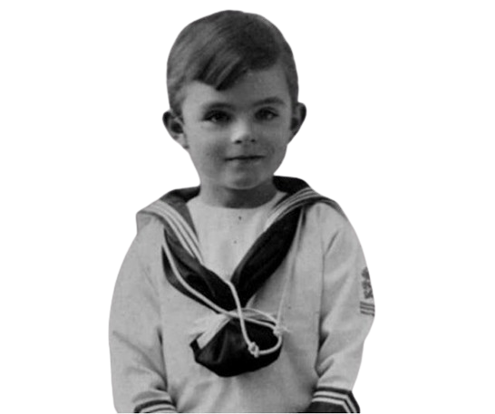
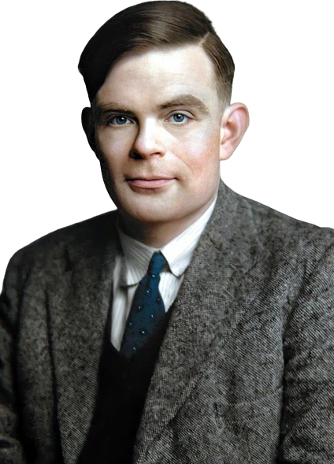

Une enfance loin de sa famille
Alan Mathison Turing né à Londres en 1912. Administrateur colonial, son père doit regagner son poste en Inde dans les plus brefs délais. Mais le climat de Madras est jugé peu favorable à la santé des enfants. Encore nourrisson, Alan est donc placé avec son frère aîné près d’Hastings, au sud de la Grande-Bretagne, dans la famille d’un colonel où l’on pense que l’éducation des garçons doit en faire des hommes , des durs, des vrais. Les fils Turing ne verront leurs parents que de manière occasionnelle durant leur enfance.
À 10 ans, le jeune Alan dévore les Merveilles de la nature que tout enfant devrait connaître. « L’ouvrage raconte comment l’embryon se développe à partir d’une cellule fécondée en suivant les lois de la physique et de la chimie », commente Jean Lassègue, philosophe au Centre de recherche en épistémologie appliquée1, à Paris, et auteur d’une biographie de Turing. C’est une révélation. Le corps y est présenté comme une gigantesque machine. Alan se met en tête qu’il est possible de déterminer les lois qui régissent sa construction à l’aide des sciences de la nature. Dès lors, il ne cesse de se passionner pour le décodage des secrets de la vie et la nature de l’esprit.
Etude Superieure
il a réussit en 1931 l'examen d'entrée au très sélectif King's College de Cambridge. Turing s'intéresse aux travaux de mécanique quantique de John Von Neumann, ce qui l'amène à étudier les probabilités et la logique. En 1935, il met au point le concept d'une machine universelle, qui formalise la notion de problème résoluble par un algorithme.Cette machine de Turing est capable de calculer tout ce qu'un processus algorithmique est capable de faire. Par essence même, les ordinateurs modernes sont des réalisations concrètes des machines de Turing
En 1936, Turing part faire son doctorat à Princeton (Etats-Unis). Assistant à la montée du nazisme, il se rapproche des milieux pacifistes, sans pour autant fréquenter les marxistes. De retour en Angleterre en 1938, il est enrôlé par l'armée anglaise sitôt la guerre commencée
Après la guerre, Turing travaille à l'institut de Physique de Grande-Bretagne à la conception des premiers ordinateurs.
Il s'intéresse aussi à la biologie, et particulièrement aux connexions neuronales, avec en toile de fond la question : pourquoi les machines, si douées pour effectuer des calculs rébarbatifs à l'homme,
sont-elles si gênées pour simuler les actions les plus naturelles de l'être humain (marcher, prendre un verre...).
Après avoir terminé ses études universitaires, Turing a continué à s'engager dans des recherches révolutionnaires qui ont façonné le paysage de l'informatique et de l'intelligence artificielle pour les décennies à venir.
Mort
Mais les deux dernières années de sa vie précipitent une fin tragique. car il a suivi un traitement chemique, ce qui a causé de graves dommages à son corps.
Le 8 juin 1954, dans l'après-midi, Turing est retrouvé par sa gouvernante mort dans son lit, avec une pomme croquée sur sa table de nuit. L'autopsie conclut à un suicide par empoisonnement au cyanure, même si sa mère tenta d'écarter cette thèse. Le moyen d'ingestion du poison aurait été cette pomme qu'il aurait partiellement mangée (une légende tenace et démentie y voit l'origine du logo de la firme Apple) et qui aurait été préalablement imbibée de cyanure ; il n'existe pas de certitude à cet égard, la pomme n'ayant pas été analysée